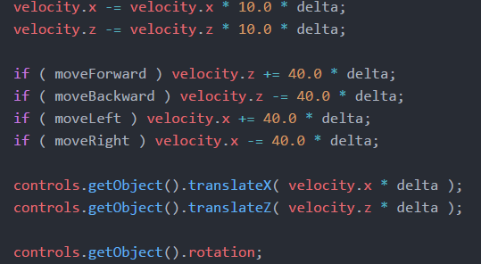
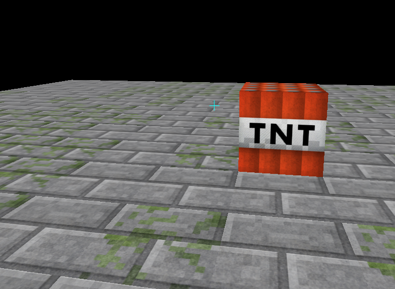

Dans cette section, il était question d'utiliser Three JS pour créer une scène 3D simple. L'objectif principal était d'apprendre à charger des textures avec la classe TextureLoader et de créer des matériaux à partir de celles-ci. Une fois ces matériaux créés, on peut créer des Mesh à partir d'une géométrie sur lesquels les appliquer. En utilisant uniquement des cubes de taille 1*1*1, on obtient rapidement une scène utilisable. Voici les deux fonction principales de cette partie :
La première étape de cette partie consistait à permettre à la caméra de se déplacer, offrant à l'utilisateur une vue à la première personne. Pour réaliser cela, il fallait gérer les appuis sur les touches du clavier à l'aide d'event listeners sur "keydown" et "keyup". En gardant à jour 4 booléens (un pour chaque direction), on peut, dans la fonction animate(), déterminer dans quelle direction déplacer la caméra. Le déplacement est effectué grâce à une entité de type PointerLockControls, qui gère l'utilisation de la souris pour "tourner la tête". Voici le code dans animate() qui permet de déplacer le joueur.
L'étape suivante consiste à créer une interface minimaliste pour aider le jouer à se repérer. Dans ce cas, on se contente de créer une croix au centre de l'écran afin de savoir vers quel point regarde notre caméra. Pour celà, on peut créer une nouvelle scène ainsi qu'une nouvelle caméra. La caméra doit être de type orthographique car on ne veut pas avoir d'effet de perspective sur notre interface. On peut ensuite utiliser Three JS pour créer à la main les sommets de notre géométrie et ainsi définir précisément des lignes. voici le résultat ainsi que la fonction qui déssine ce crosshair :
Cette partie a été la plus difficile à réaliser, parfois par manque de références dans la documentation de Three JS. Le concept ici est de donner, dans une scène non affichée à l'écran, une couleur unique à chaque objet de la scène. A chaque clic de souris, on regarde la couleur de l'objet touché, on peut ensuite vérifier si elle correspond à celle de l'un de nos objets. Si c'est le cas, on peut déterminer que c'est bien sur cet objet que l'on a cliqué. Cette technique utilise moins de ressources que le lancer de rayons car on peut demander à la carte graphique de faire le gros du travail et ainsi soulager le processeur. Pour réaliser cette technique on crée donc un offscreen buffer de type WebGLRenderTarget. Chaque objet possédant déjà un id grâce à Three JS, on peut utiliser la fonction applyFaceColor donnée durant le TD en lui transmettant une géometrie et l'id de l'objet qui est construit. En récupérant les clics de souris grâce à l'event listener 'mouseup', on peut choisir différentes actions en fonction du bouton pressé. Voici la fonction appelée lors d'un clic de souris, elle détermine l'objet touché en récupérant la couleur du pixel sous le crosshair avec readRenderTargetPixels. On convertis cette couleur depuis l'hexadécimal et on cherche si un objet de la scène possède cet id avec getObjectById. Ensuite on effectue une action en fonction du bouton de la souris qui est pressé :
Le clic droit détruit les cubes visés :
Le clic central crée un cube au dessus de celui visé :